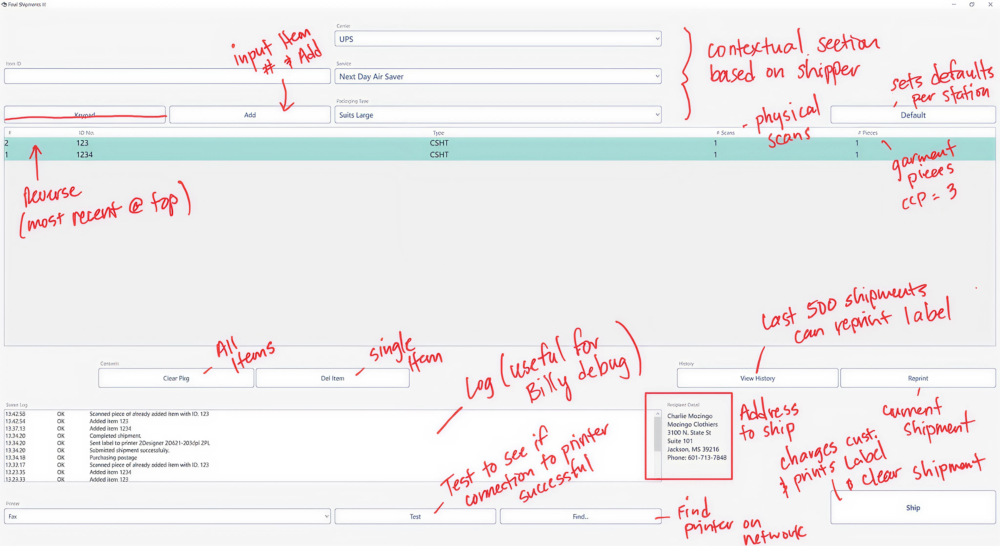
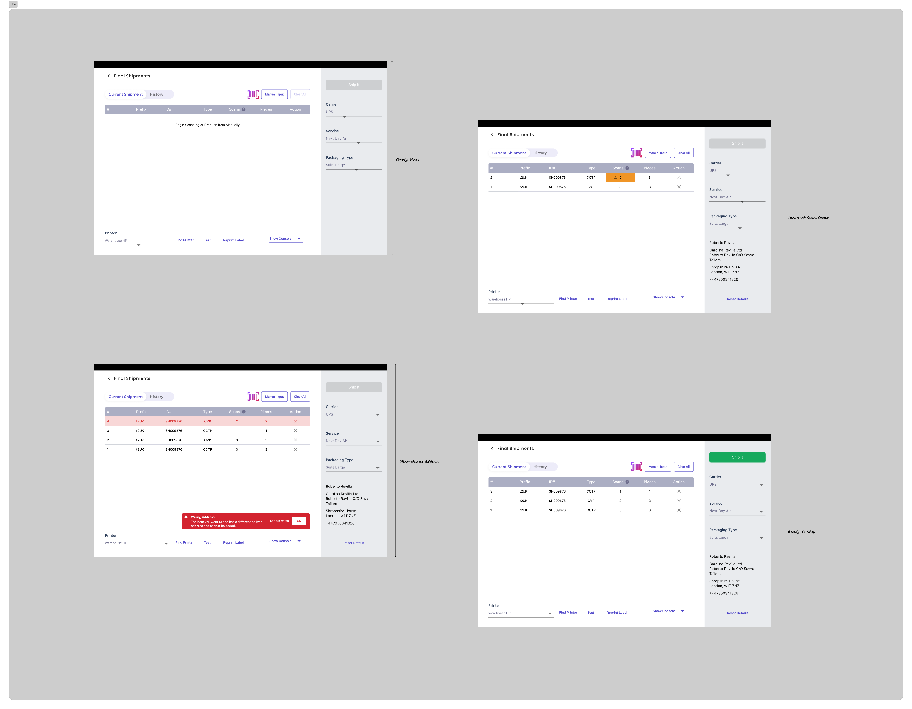
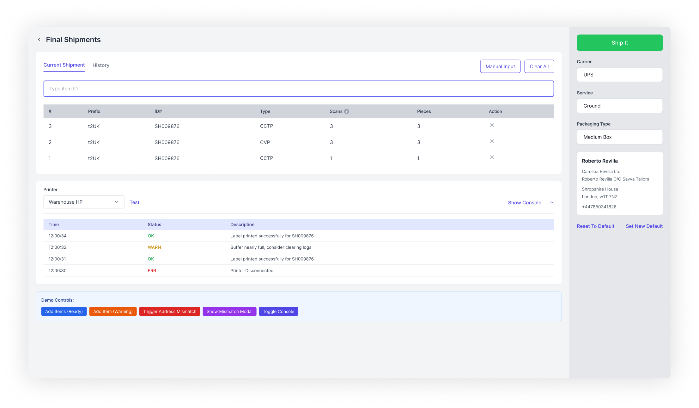

Project Impact
- Touch-first design optimized for gloved hands and mounted tablets
- Error prevention through confirmation scans and visual feedback
- Operational efficiency in high-volume, time-critical workflows
- Cross-functional expertise in hardware integration and domain constraints
The Challenge
Warehouse operations have unique UX requirements that differ dramatically from typical web applications. This project required designing a shipping management system for a warehouse environment where:
Physical constraints:
- Users wear gloves (touchscreen interaction difficulties)
- Devices mounted on carts or walls (limited positioning)
- Lighting varies (glare on screens)
- Users are standing, often holding packages
Operational constraints:
- High-volume, repetitive workflows (hundreds of scans per day)
- Speed is critical (shipping delays have real costs)
- Error tolerance is low (wrong package = major issue)
- Multi-device environment (barcode scanners, label printers, tablets)
Research & Discovery

Contextual Inquiry
I conducted on-site observations at the warehouse during peak shipping hours to understand how workers actually move through the space, what causes slowdowns and errors, and how current systems are used.
Workflow reality:
- Worker picks up package
- Scans barcode on package label
- System looks up shipping info
- Worker selects correct printer
- Prints shipping label
- Applies label to package
- Scans to confirm shipment
- Places in correct outbound bin
Pain points in existing system:
- Too many clicks to complete workflow
- Printer selection buried in settings
- Confirmation scans not required (leading to errors)
- No visual feedback when scan successful
- Desktop-oriented layout (tiny touch targets)

Strategic Approach
Touchscreen-First Design Philosophy
Rather than adapting a desktop interface, I approached this as touchscreen-native design:
Principles:
- Minimum 60px touch targets (gloved hands need larger areas)
- High contrast (readable in varying light conditions)
- Obvious active states (workers need immediate feedback)
- Vertical optimization (tablets typically in portrait)
- No hover states (touch interfaces don't have hover)
- Large typography (16px minimum, 20px+ preferred)
Error Prevention vs. Error Recovery
A strategic UX decision: how do we handle errors?
Prevention strategies:
- Confirm scan before proceeding
- Visual feedback at each step
- Printer status indicators
- Package history view
Recovery strategies:
- Clear error messages (what happened + what to do)
- Rescan option (fix mistake without starting over)
- Supervisor override code
- Detailed console log (for troubleshooting)
Key Design Decisions
1. Two-Tab Architecture
Decision: "Current Shipments" and "History" tabs as primary navigation
Rationale:
- Current: Active workflow (scanning, printing, shipping)
- History: Reference/lookup (customer service, error investigation)
- Different task contexts (action vs. research)
- Prevents accidental modification of completed shipments

2. Barcode Input Methods
Decision: Three input methods for package identification
Primary: Barcode scanner button (largest, 100x100px)
Secondary: Manual entry field (for damaged barcodes)
Tertiary: Camera scan (backup when USB scanner unavailable)
Strategic rationale: Primary method optimized for speed, backups ensure workflow never blocked.
3. Printer Selection UX
Decision: Always-visible printer selector with status indicators
Old way: Buried in settings menu, required 4 clicks
New way:
- Dropdown visible on main screen
- Shows all available printers
- Real-time status (online/offline/out of paper)
- Last-used printer auto-selected
- Single tap to change
Why this matters: Workers ship packages to 4 different carriers with different label sizes. Printer switching happens dozens of times per hour.
4. Package Table Design
Decision: Scannable table with expandable rows (master-detail pattern)
Master view: Package ID, Status badge, Carrier, Timestamp, Actions
Detail view: Customer info, package contents, handling instructions, tracking number
Why expandable: Keeps main view scannable while making details available on-demand.
5. Console/Error Log
Decision: Toggle-able console view for transparency
Problem: Workers couldn't see errors when things went wrong
Solution:
- "Show Console" toggle button
- Reveals technical log (API responses, scanner events, printer status)
- Collapsible (doesn't clutter main interface)
- Syntax highlighting for readability
Why this matters: Empowers workers to troubleshoot, reduces "call IT" delays.
Visual Design & Touch Optimization
Touch Target Sizing
Minimum sizes:
- Primary buttons: 80px x 80px
- Secondary buttons: 60px x 60px
- Table rows: 80px tall (tappable area)
- Input fields: 60px tall
Why generous sizing: Workers wearing gloves need larger, forgiving touch targets. Accidental mis-taps are costly.
Typography for Glanceability
- Headers: 24px
- Package IDs: 20px (monospace)
- Body text: 18px
- All text meets WCAG AAA (7:1 contrast)
Final Solution
Play With the Prototype →

Current Shipments Tab
The active workflow screen features a large "Scan Package" button dominating the upper portion, printer selector immediately below, and a scanned packages table showing the current batch. Each row is expandable for details, with action buttons clearly visible.
Workflow efficiency:
- 2 taps to complete shipment (scan, ship)
- 3 taps if label needed (scan, print, ship)
- Visual confirmation at each step
- Minimal scrolling required
History Tab
The reference/lookup screen includes date range selector, search by package ID/customer/tracking, filter by status/carrier, and expandable rows showing full shipment details.
Console View
Toggle button in header reveals an overlay that slides up from bottom, showing real-time log of system events with syntax highlighting and filter controls.
Outcomes & Impact
Worker Feedback
- "So much faster than the old system"
- "I can finally see if the scan worked"
- "Switching printers is actually easy now"
- "When something goes wrong, I can fix it myself"
Expected Outcomes
- Fewer mislabeled packages (confirmation scan catches errors)
- Reduced printer-related delays
- Faster error recovery
- Shorter training time (30 minutes vs. half-day)
Reflections & Learnings
What Worked Well
Contextual research: On-site observation was critical. Designing from an office would have missed glove-wearing, glare issues, mounting constraints.
Touch-first thinking: Starting with touchscreen constraints led to better core design than adapting from desktop.
Error transparency: The console view was controversial initially but became a favorite feature.
What I'd Do Differently
Earlier prototype testing: Should have built clickable prototype and tested in warehouse environment sooner.
Accessibility: Status color system relies heavily on color alone—should have stronger shape/icon differentiation.
Domain Expertise Gained
This project deepened my understanding of:
- Warehouse operations and constraints
- Barcode/RFID systems
- Industrial touchscreen interfaces
- Physical computing considerations
- Time-critical workflow design
Portfolio Takeaways
This project demonstrates senior-level design thinking through:
- ✅ Domain expertise (understood warehouse operations deeply)
- ✅ Context-aware design (touchscreen-first for gloved hands, mounted tablets)
- ✅ Cross-functional collaboration (hardware integration, backend API)
- ✅ Error handling strategy (prevention + recovery)
- ✅ Operational efficiency focus (every tap counts in high-volume workflows)
The Final Shipments Manager showcases the ability to design for specialized, operational environments—not just consumer apps. It demonstrates understanding of physical constraints, technical limitations, and business efficiency requirements.